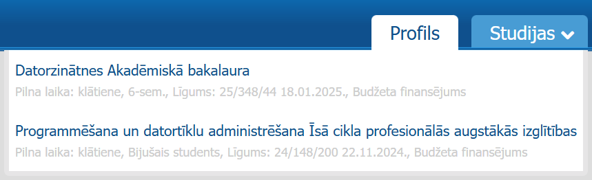
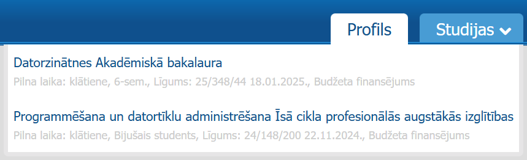
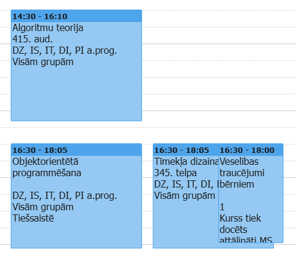
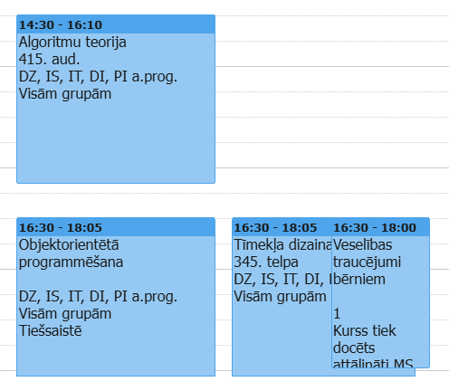

LU studenta digitālais ceļvedis
Ievadvārds
Studiju process Latvijas Universitātē nozīmē saskarsmi ar dažādām digitālajām sistēmām un rīkiem. Daži no tiem ir rūpīgi izstrādāti, ērti lietojami un padara studiju procesu vieglāku, bet citi - ne tik ļoti. Šajā ceļvedī var atrast manu personīgo skatījumu uz dažādām platformām un programmām, ar ko es kā Latvijas Universitātes datorzinātņu st udente esmu saskārusies.
LUIS
LUIS sistēma bija pirmā platforma, ar kuru es sastapos, iestājoties universitātē. Savā ziņā tā ir kā Latvijas Universitātes krietni grūtāk lietojamā E-Klase.
Bieži vien gadās aizmirst, ka šī platforma pastāv, līdz ar to katra gada sākumā, vidū un beigās, kad ir jāreģistrējas kursiem un jāpilda aptaujas, nākas platformu apgūt no jauna. 3/10.
 

 

E-studijas
Arī E-studijas ir pielīdzināmas E-Klasei - šī ir galvenā platforma, kur var atrast kursus, informāciju par tiem, palīgmateriālus un daudz ko citu. Zemāk tiek apskatītas svarīgākās sadaļas un skati.
Sākums
Te var atrast "noderīgus materiālus", ziņas, kursu uzskaitījumu un vēl daudz ko citu. Neizmantoju. 1/10.
Infopanelis
Visbiežāk apmeklētā sadaļa, kur var ērti atrast nesen apmeklētās kursu lapas, laika skalu ar tuvojošiem termiņiem un kalendāru. 9/10.
Rediģēts infopanelis
Infopaneļa sadaļā var pievienot papildus blokus un mainīt to izkārtojumu. Nezimantoju šo funkcionalitāti. 1/10.
Kursa skats
Kursa skatā var atrast kursa prasības, docenta kontaktinformāciju, papildmateriālus un vērtējumus. 8/10.
Mani kursi
Te var atrast kursus, kurus students apmeklē. Dažreiz noder, biežāk nē. 5/10.
Visi kursi
Te var atrast visus kursus visās fakultātes. Nav nekad noderējis. 1/10.
Attālinātās studijas
Attālinātajās studijās galvenokārt tiek izmantota Microsoft Teams platforma. Katrā semestra sākumā tiek izveidotas komandas tiem kursiem, kuros notiek attālinātās lekcijas.
Daudziem nepatīk MS Teams, bet man pašai nav izteikti iebildumi pret to. Jā, ir daudz savienojuma, video un audio problēmas, bet varētu būt sliktāk (Zoom).
Programmatūra
Visual Studio Code, Figma un Outlook ir manas visbiežāk izmantotās un noderīgākās programmas kā datorzinātņu studentei. Šīs programmas universitātē tiek izmantotas regulāri, un katrs datorzinātņu students ar tām vismaz reizi saskaras. Kaut sākotnēji VS Code un tā saskarne man šķita sarežģīta, tas ir kļuvis par manu galveno koda redaktoru, jo tas ir ātrs, pielāgojams un piedāvā daudz noderīgu papildinājumu, kas atvieglo programmēšanu. Figma ir ērta dizaina un prototipu veidošanai, taču dažkārt tā var būt lēna, ja projekti ir lieli. Outlook es izmantoju e-pastiem un kalendāram . Tā nav staro modernākajām programmām, bet strādā gana labi, lai sazinātos ar pasniedzējiem un sekotu līdzi jaunumiem.